Inscrições
Abertura das inscrições
05 de Novembro de 2026
VII Reunião de Argilas Aplicadas
VII Reunião de Argilas Aplicadas — São Luís, Maranhão
Sobre o encontro
A VII Reunião de Argilas Aplicadas (VII RAA) reunirá pesquisadores, docentes, estudantes e profissionais interessados na ciência, caracterização, modificação e aplicação de argilas e materiais correlatos.
Realizado na Universidade Federal do Maranhão (UFMA), em São Luís, o congresso será um espaço de intercâmbio científico, apresentação de resultados e aproximação entre pesquisa acadêmica, inovação tecnológica e desafios socioambientais. A edição de 2027 é coordenada pela Profa. Dra. Ana C. Alcântara.
Descubra oportunidades de colaboração →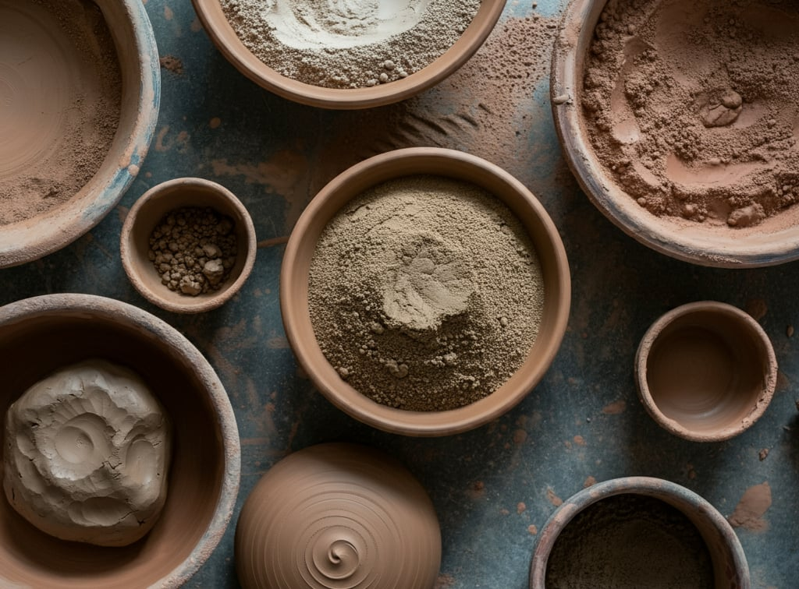
Planeje sua participação
Acompanhe os principais marcos da VII RAA e organize sua participação no encontro.
Inscrições
05 de Novembro de 2026
Trabalhos científicos
Consulte a seção Submissão
Resultados
A definir
24–26 de maio de 2027
Universidade Federal do Maranhão · São Luís
VII Reunião de Argilas Aplicadas
24 a 26 de maio de 2027 · Universidade Federal do Maranhão, São Luís — MA.
| Data | Horário | Atividade | Categoria | Palestrante / responsável |
|---|
As atividades que ocorrem simultaneamente são paralelas. Os horários e títulos seguem o documento de programação fornecido.
Formação e atualização científica
Três dias dedicados à troca de conhecimento sobre argilas, minerais, materiais funcionais, caracterização, aplicações tecnológicas e sustentabilidade.
Atividades de 24 de maio.
Continuação às 16:20, após o intervalo.
Continuação às 16:20, após o intervalo.
Continuação às 16:20, após o intervalo.
Parcerias e oportunidades
Instituições, empresas e organizações podem contribuir para a formação científica, o intercâmbio de conhecimento e a construção de novas oportunidades.
Apoio científicoPalestras, minicursos e atividades técnicas.
↗Formação e talentosPrêmios, bolsas e participação estudantil.
↗Inovação e territórioProjetos colaborativos e impacto regional.
↗Clique nos links e conheça nossos parceriros

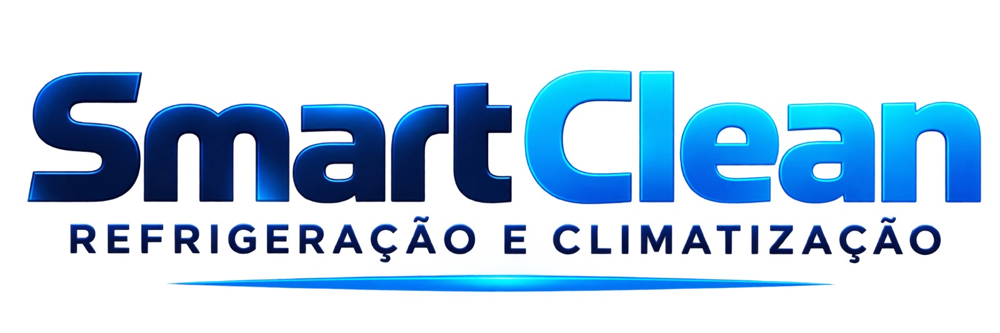
Cidade anfitriã
São Luís combina história, cultura viva e paisagens atlânticas em uma experiência singular. No Centro Histórico, casarões coloniais e fachadas revestidas de azulejos guardam marcas do encontro de diferentes povos; nos mercados, na música e na culinária, as tradições maranhenses seguem presentes no cotidiano. Cercada por praias, manguezais e ritmos próprios, a capital oferece aos participantes da VII RAA muito mais que o local do congresso: um convite para conhecer o patrimônio, os sabores e a hospitalidade do Maranhão.
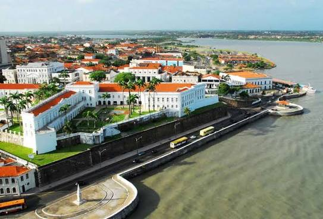
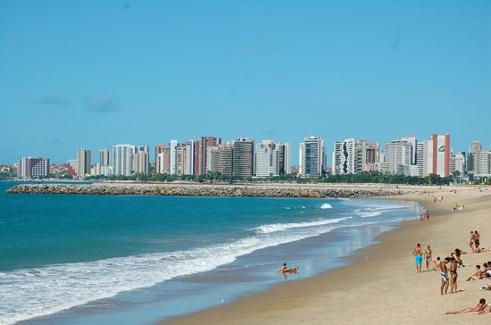
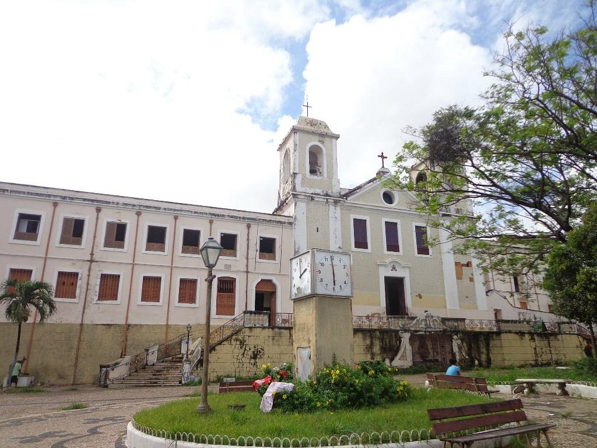

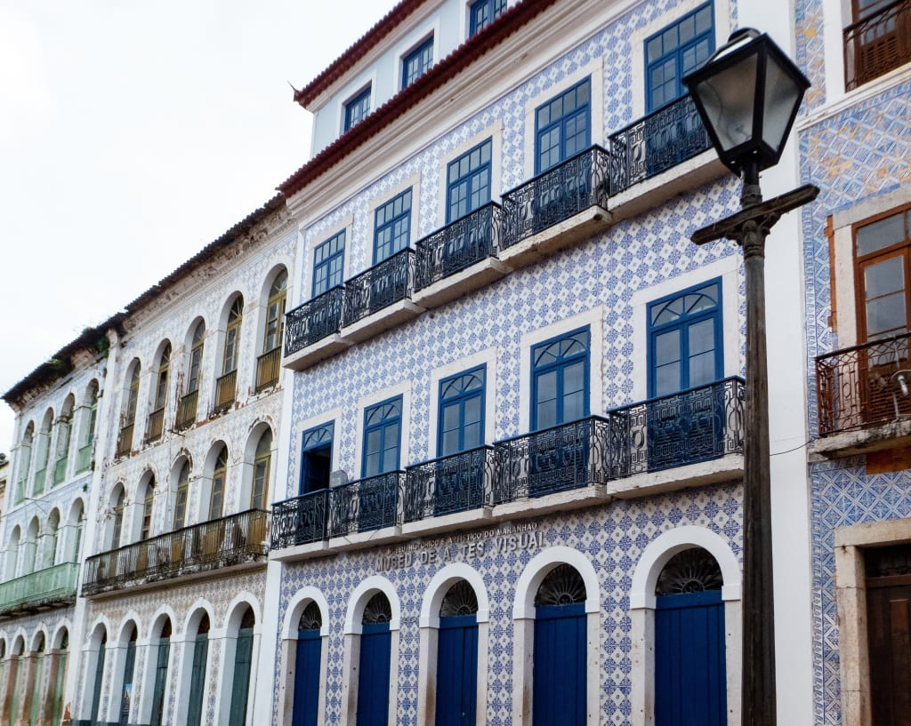
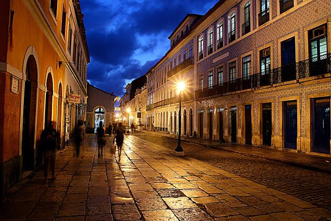
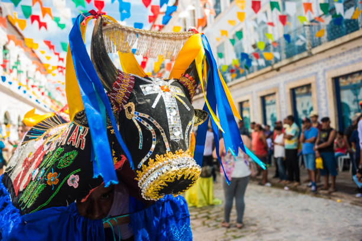
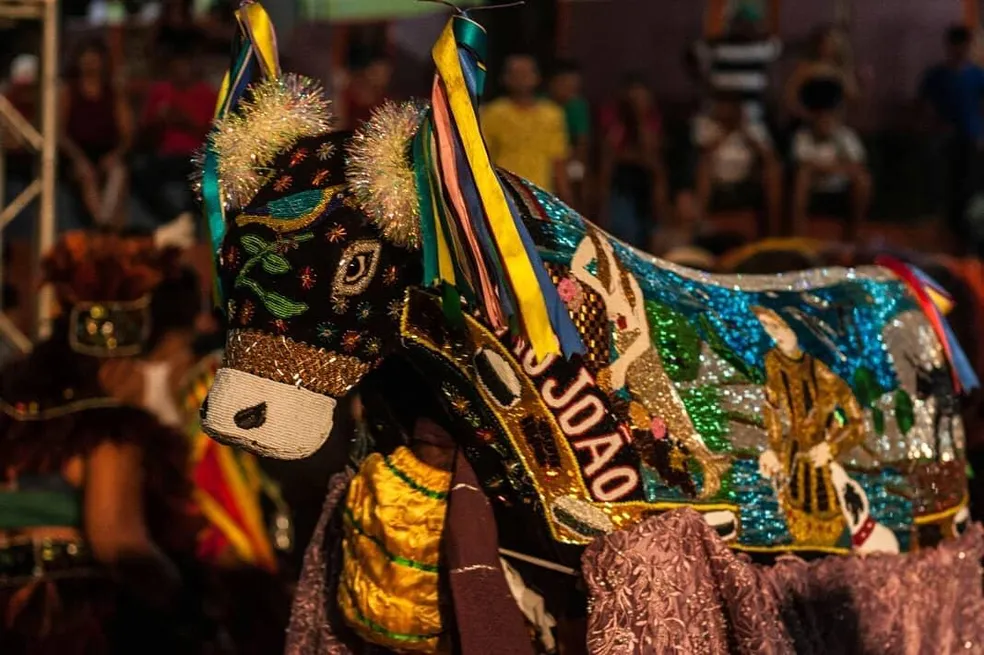
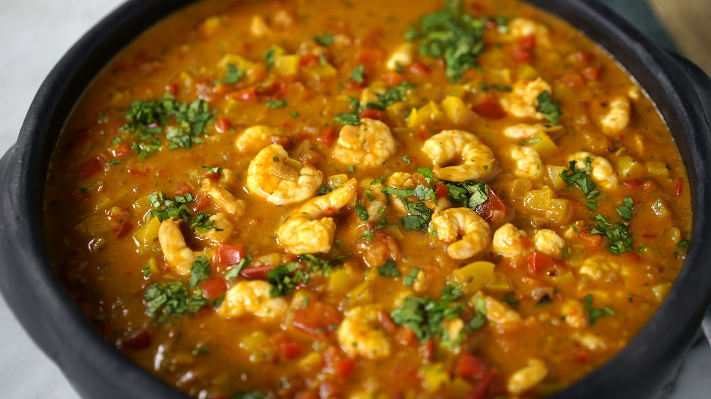
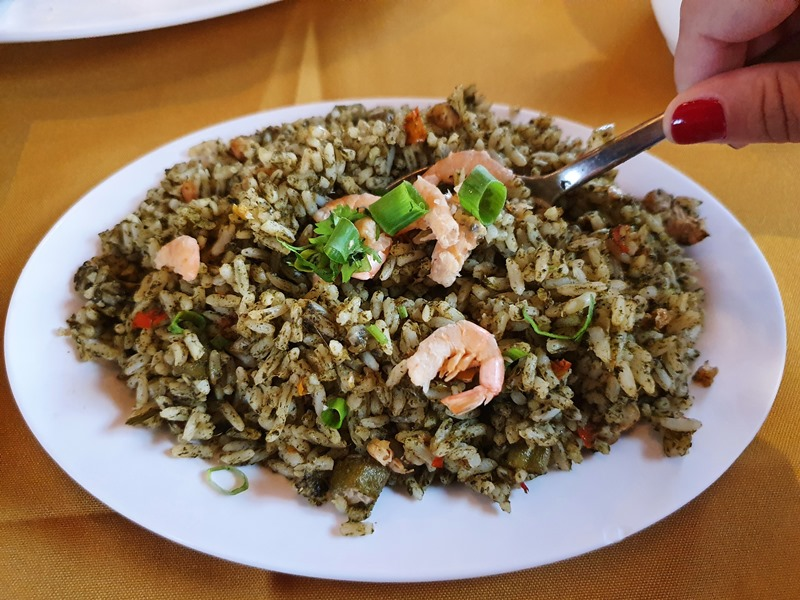
Local do evento
Campus São Luís — Bacanga, São Luís, Maranhão.
Abrir rota no Google Maps ↗Conheça o Maranhão
Além do congresso, aproveite para conhecer o patrimônio, as comunidades costeiras e as paisagens que tornam o Maranhão singular.
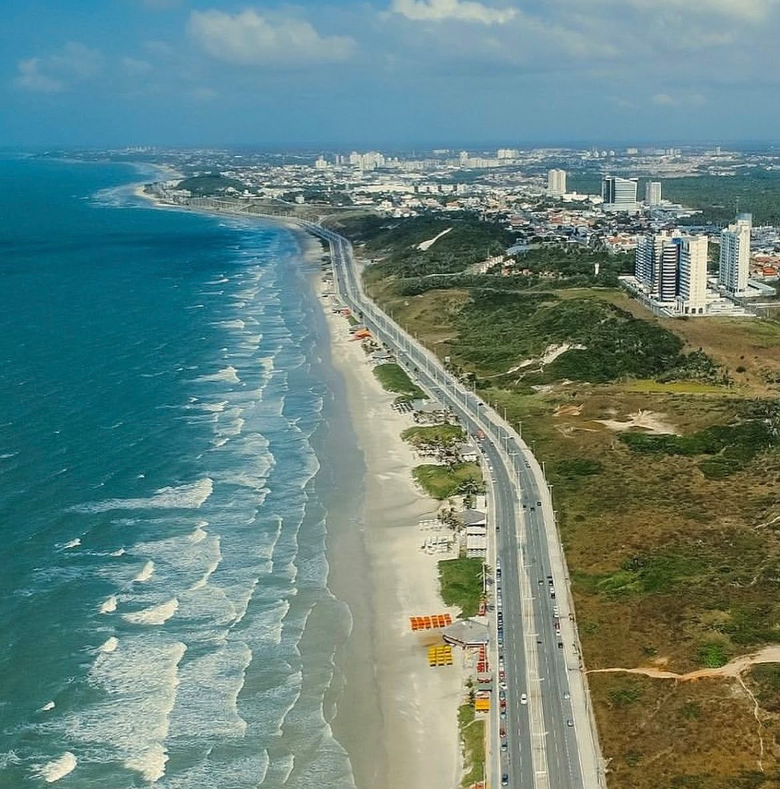
Patrimônio e cultura
O Centro Histórico, reconhecido como Patrimônio Mundial pela UNESCO, reúne casarões, fachadas azulejadas, ladeiras e praças que contam séculos de história. A cidade também pulsa no tambor de crioula, no bumba meu boi, nos mercados e na culinária marcada por sabores próprios.
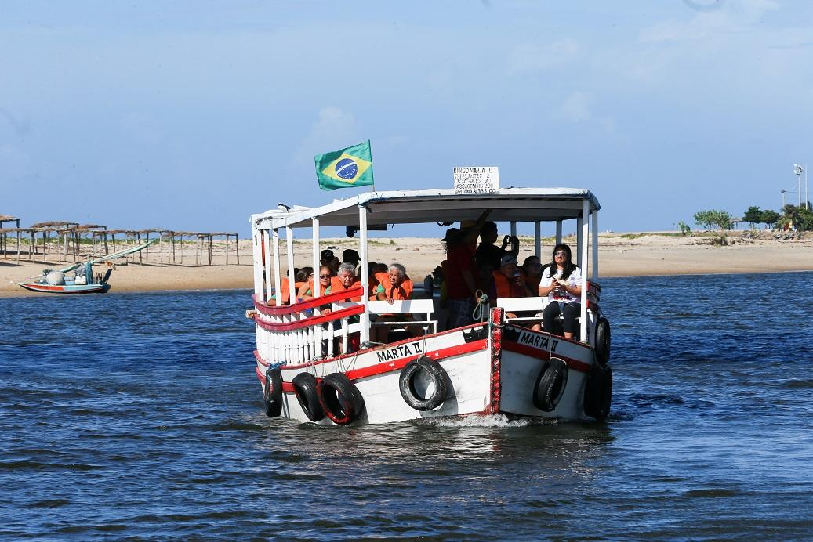
Litoral e artesanato
Próxima à capital, Raposa combina paisagens costeiras, comunidades pesqueiras e o trabalho tradicional das rendeiras. É um passeio para conhecer outro ritmo do litoral maranhense e valorizar os saberes transmitidos entre gerações.
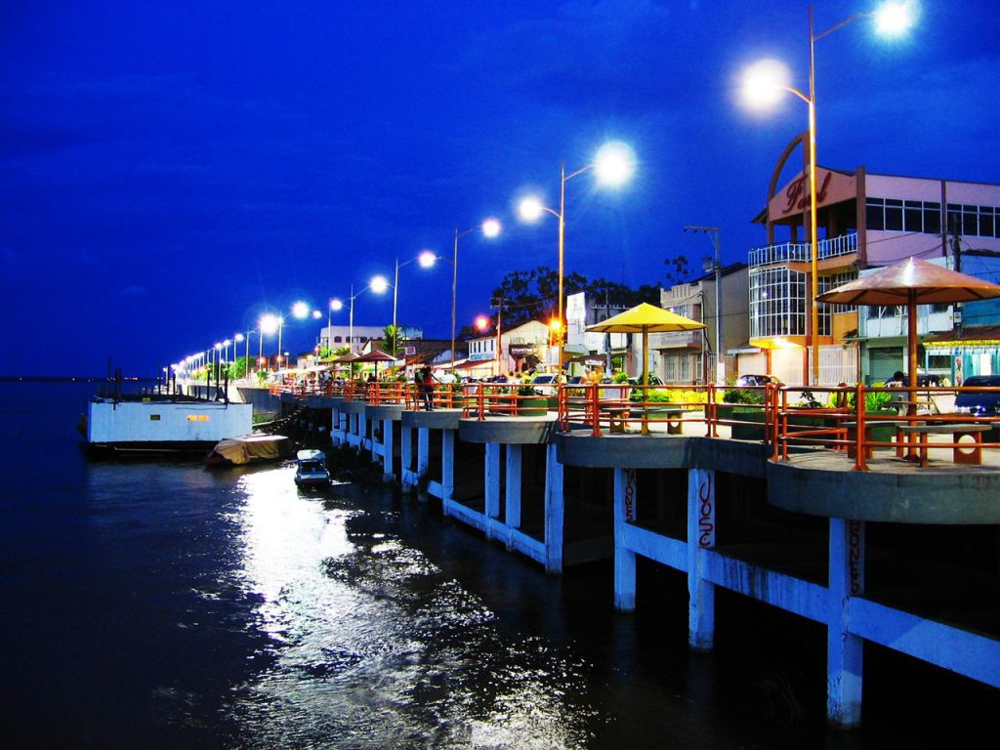
Rios e aventura
Às margens do Rio Preguiças, Barreirinhas é uma das principais bases para visitar o Parque Nacional dos Lençóis Maranhenses. A cidade oferece estrutura de hospedagem, restaurantes e passeios organizados por operadores locais.
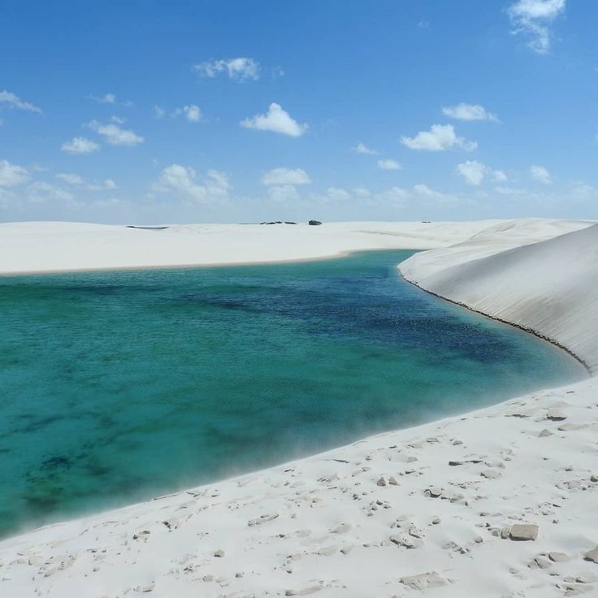
Paisagem natural
O Parque Nacional dos Lençóis Maranhenses reúne extensos campos de dunas e lagoas sazonais de águas claras. A paisagem muda ao longo do ano; por isso, a experiência depende do período da visita e das condições locais.
Estenda sua viagem
Uma ideia de roteiro para conhecer diferentes paisagens do Maranhão depois do evento.
Centro Histórico, Mercado das Tulhas, casarões azulejados e pôr do sol na orla.
Artesanato de renda de bilros, litoral e gastronomia regional, conforme a disponibilidade dos passeios.
Deslocamento para a região dos Lençóis e passeio organizado pelo Rio Preguiças.
Visita guiada a circuitos de dunas e lagoas, conforme as condições sazonais e a logística local.
Este roteiro é apenas uma sugestão. Os deslocamentos entre São Luís e Barreirinhas levam várias horas; avalie pernoites, orçamento e condições de transporte antes de reservar.
Inscrições
A inscrição dá acesso às atividades científicas da VII RAA. Confira a categoria correspondente ao seu vínculo e guarde o comprovante de pagamento.
Submissão científica
Pesquisadores, docentes e estudantes podem preparar trabalhos relacionados à ciência das argilas, minerais, materiais funcionais e suas aplicações.
Consultar a comissão científica ↗Apresente título, autores, afiliações, introdução, objetivo, metodologia, resultados principais e conclusão.
Garanta clareza, consistência dos dados, referências pertinentes e conformidade ética. Não inclua resultados que não possam ser sustentados pelos dados apresentados.
Indique a área que melhor representa o trabalho, como caracterização, mineralogia, materiais, aplicações ambientais, energia ou modelagem.
Utilize o sistema e o modelo oficial de submissão quando disponibilizados pela organização. Confira as regras de autoria, formato, idioma e apresentação antes do envio.
Organização
A VII Reunião de Argilas Aplicadas é realizada em São Luís, Maranhão, com sede na Universidade Federal do Maranhão.

Universidade Federal do Maranhão (UFMA)
Universidade Federal do Maranhão (UFMA)
Instituto Federal do Maranhão (IFMA)
Universidade Federal do Maranhão (UFMA)
Universidade Federal do Rio Grande do Norte (UFRN)
Universidade Federal do Piauí (UFPI)
Dúvidas frequentes
Informações essenciais para planejar sua participação na VII RAA.
A VII Reunião de Argilas Aplicadas será realizada de 24 a 26 de maio de 2027.
O evento acontecerá na Universidade Federal do Maranhão (UFMA), campus São Luís — Bacanga, Maranhão.
As categorias e os valores estão apresentados na seção Inscrição. Consulte os canais oficiais para informações sobre período e pagamento.
A seção Submissão reúne orientações gerais para preparar o trabalho. Antes do envio, siga o modelo e as normas oficiais da comissão científica.
Entre em contato com a coordenação do evento para discutir oportunidades de apoio e colaboração.